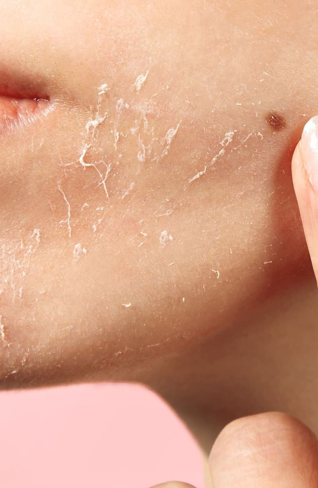
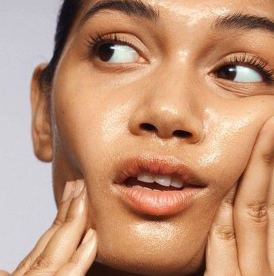
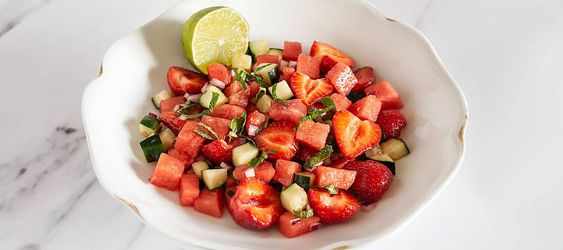
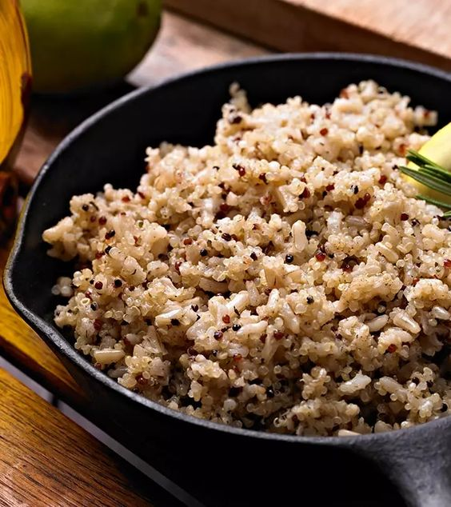
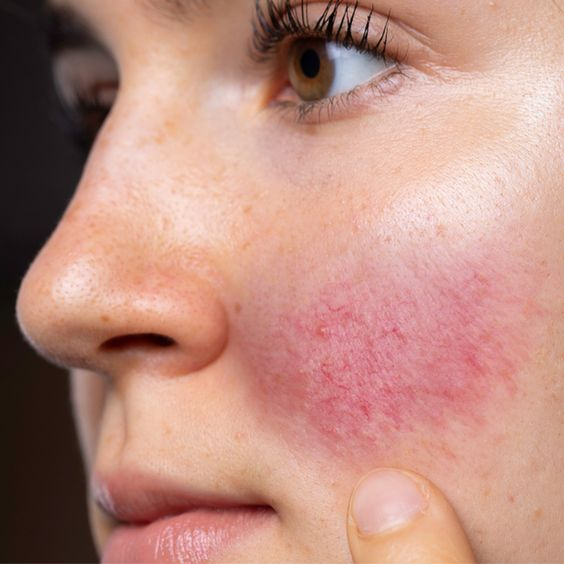
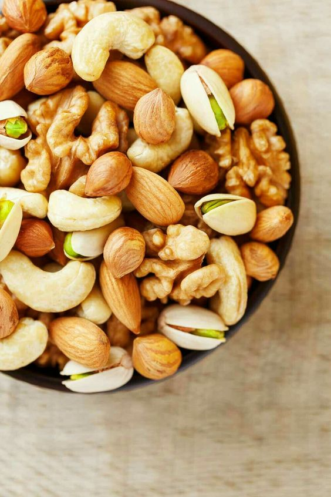

TIPOS DE PIEL
Comer según tu tipo de piel
Todos los tipos de piel pueden beneficiarse de los alimentos que consumimos e hidratación, pero los diferentes tipos de piel (que incluyen piel grasa, seca, normal, mixta y sensible) tienen diferentes necesidades. Por eso, entender tu tipo de piel es el primer paso para cuidarla adecuadamente. Pero ¿cómo saber qué tipo de piel tienes? La respuesta se puede encontrar mediante una simple observación.
Piel Seca
Si tu piel se siente tirante, luce opaca o presenta escamas, es probable que tengas piel seca. Este tipo de piel suele ser el resultado de la exposición prolongada al aire frío del invierno, el uso excesivo de productos de limpieza agresivos, la utilización de ciertos medicamentos o la falta de ciertos nutrientes en la dieta. El objetivo principal es restaurar los niveles naturales de humedad de la piel y aprender a retener esa hidratación a través de cuidados constantes y atención especializada.

Para mejorar la salud de la piel seca, se recomienda incorporar alimentos ricos en nutrientes como hígado de res o pollo orgánico y alimentado con pasto, que son excelentes fuentes de vitamina A y D. El salmón al horno es una excelente opción debido a su contenido elevado de vitamina D y Omega 3, y se puede acompañar con mantequilla y zanahorias glaseadas con miel para obtener una dosis de precursores de vitamina A. Otra alternativa es disfrutar de un curry de verduras mixtas con cúrcuma, un potente antioxidante, o una pasta al pesto elaborada con almendras en lugar de piñones para aprovechar los beneficios de la vitamina E para la piel.
Piel Grasa
Si tu piel se siente grasosa y brillante en todas partes, es posible que tengas una producción excesiva de sebo. Esto puede ser causado por tendencias genéticas, estrés, humedad y cambios hormonales, que a menudo pueden llevar a problemas en la piel y brotes de acné.
El objetivo para este tipo de piel es equilibrar las hormonas sin depender de anticonceptivos u otros medicamentos. Los andrógenos, como la testosterona, son las hormonas sexuales responsables del exceso de grasa en la piel, que son más abundantes en hombres pero también están presentes en menor medida en mujeres.

Una opción excelente es agregar aceite de linaza a tus ensaladas, ya que contiene lignanos que pueden ayudar a corregir desequilibrios hormonales imitando la hormona femenina estrógeno. Además, los ácidos grasos omega-3 presentes en el aceite de linaza ayudan a hidratar la piel sin dejarla grasosa. También es beneficioso incluir alimentos con alto contenido de agua, como pepinos, apio, sandía y fresas, ya que ayudan a mantener la hidratación de la piel.

Piel Mixta
Es frecuente encontrar una combinación de tipos de piel, donde algunas áreas pueden sentirse secas o normales, mientras que otras pueden ser grasas, especialmente en la zona de la nariz, la frente y el mentón, conocida como la zona T. Algunas personas pueden identificar este tipo de piel por la presencia de poros más grandes en la nariz en comparación con las mejillas, o por la presencia de áreas secas y escamosas en el cuero cabelludo, conocida comúnmente como caspa.
Para abordar la piel mixta, es importante buscar un equilibrio entre las áreas secas y grasas para lograr una consistencia en toda la piel. Esto se puede lograr a través de una dieta saludable y equilibrada. Es crucial evaluar diariamente el estado de la piel y estar abierto a combinar consejos para pieles secas y grasas, dependiendo de las necesidades individuales. Dado que los carbohidratos pueden provocar inflamación y desequilibrar la piel mixta, es recomendable optar por carbohidratos ricos en proteínas, como el arroz integral o la quinua, para mantener la salud y el equilibrio de la piel.

Piel Sensible
Las personas con este tipo de piel son más susceptibles a experimentar reacciones como enrojecimiento, picazón e incluso sensaciones de ardor o escozor en ciertas áreas. Estas reacciones indican una vulnerabilidad en la barrera protectora de la piel, que puede ser desencadenada por factores ambientales, deshidratación o condiciones subyacentes como dermatitis de contacto, alergias específicas o rosácea.

Al igual que con cualquier otro tipo de piel, es importante incluir en la dieta una variedad de frutas y verduras ricas en antioxidantes, granos enteros, frutos secos, semillas, legumbres y ácidos grasos esenciales. Sin embargo, para la piel sensible, también es crucial identificar los alimentos que podrían estar desencadenando reacciones negativas y considerar eliminarlos de la dieta. Entre los posibles culpables se encuentran el gluten, los lácteos, la soja y los alimentos que liberan histamina, como el alcohol, los alimentos fermentados, el caldo de huesos, las frutas secas y los embutidos. En cuanto a las bebidas, se recomienda probar el té verde o disfrutar de una taza de leche dorada tibia o café con leche con cúrcuma como alternativas saludables.

Para todo tipo de piel, es fundamental incluir muchos antioxidantes en la dieta, como vitaminas A, C y E, zinc y selenio. La vitamina D también es muy recomendable, al igual que los ácidos grasos Omega-3.